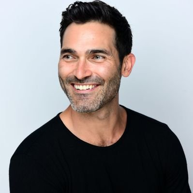

Tyler Hoechlin

Mais conhecido por seu papel como o lobisomem Derek Hale no drama Teen Wolf, também estrelado por Tyler Posey. É lembrado por sua interpretação na série Sétimo Céu, onde viveu Martin Brewer, e por encarnar o Super-Homem na série Supergirl, em 2016. Em 2019, começou a estrelar a série Outra Vida, da Netflix.
Antes da Fama
Praticava esportes na Arizona State University e na UC Irvine.
Curiosidades
Foi indicado ao Teen Choice Awards por sua atuação em Teen Wolf.
Vida Pessoal
Em 2012, começou um namoro com a atriz Britanny Snow, mas o casal se separou em 2015. Tem dois irmãos e uma irmã.
Ligações
Interpretou o filho do personagem de Tom Hanks em Estrada para Perdição.